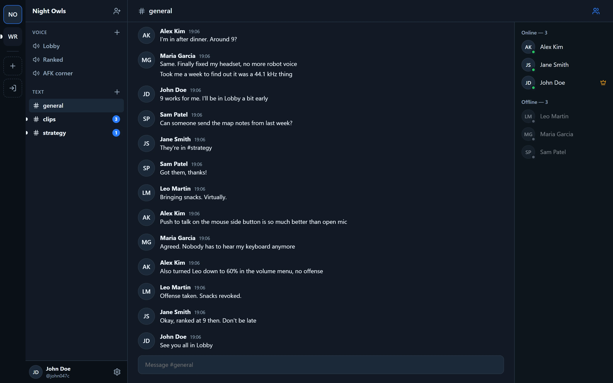

Voice chat for the people you actually play with.
Ovrilo is a small voice and text chat app for Windows. Push to talk works while your game has focus, it sits quietly in the tray, and it keeps the call going when you close the window.
Checking for the latest version…
Ovrilo is in early alpha and the installer isn't code-signed yet, so Windows will say the publisher is unknown. Choose More info, then Run anyway. After that, Ovrilo installs its own updates and checks each one's signature first.
Your crew, in one window
Voice channels on the left, the conversation in the middle, and who is online on the right.
Channels with something new show how many messages are waiting, so you can catch up before the next match.

What changed Newest first
- Loading the changelog…